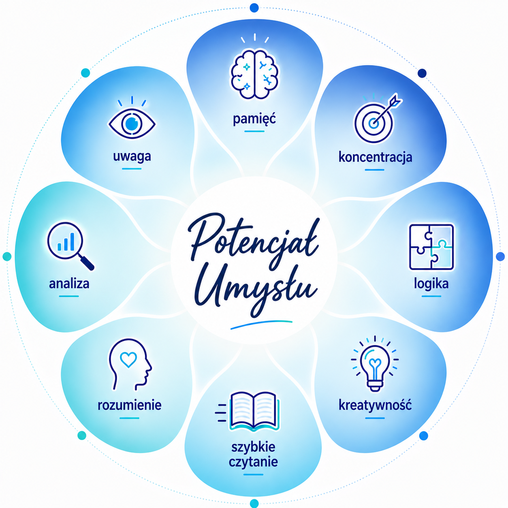

Opinie kursantów
Co mówią osoby, które ukończyły nasze kursy?

Gotowy, żeby uczyć się efektywniej?
Dołącz do kursu i przekonaj się, jak szybko możesz zrobić postęp.
Zapisz się na lekcję próbną
Zajęcia z szybkiego czytania i technik pamięciowych, to niczym zestaw uniwersalnych narzędzi do nauki WSZYSTKIEGO.
– Dla uczniów kl. 4–8 szkoły podstawowej
– Dla uczniów szkół ponadpodstawowych i studentów
– Dla dorosłych
Nasze kursy prowadzimy w oparciu o licencjonowaną metodę EDU Szkoła Szybkiego Czytania i Technik Pamięciowych — jednego z najbardziej rozpoznawalnych systemów nauki szybkiego czytania, technik pamięciowych i efektywnej nauki w Polsce.
Metoda została stworzona przez mgr Bartosza Raszewskiego i jest rozwijana od ponad 21 lat przez zespół psychologów, pedagogów oraz trenerów praktyków. Łączy sprawdzone techniki szybkiego czytania, koncentracji i zapamiętywania z nowoczesnym podejściem do nauki.
Program czerpie z najlepszych światowych wzorców edukacyjnych, m.in. doświadczeń szkół brytyjskich, niemieckich oraz Francuskiego Instytutu Pedagogicznego.
To metoda, która przez lata była stale udoskonalana, testowana w praktyce i dostosowywana do realnych potrzeb dzieci, młodzieży i dorosłych — tak, aby nauka była szybsza, skuteczniejsza i po prostu łatwiejsza.
• kilkakrotnie szybszy proces uczenia się, również języków obcych
• czytanie ze zrozumieniem co najmniej 2× szybciej
• odczuwalnie lepsza pamięć i koncentracja
• lepsza analiza i logiczne myślenie
• większa uważność i koordynacja pracy mózgu
Zajęcia prowadzone przez certyfikowanych trenerów szybkiego czytania i technik pamięci, z wieloletnim doświadczeniem w pracy pedagogicznej.
Skontaktuj się z nami
Nauka różnych technik szybkiego czytania z zachowaniem rozumienia czytanego tekstu
Techniki pamięciowe ułatwiające zapamiętywanie i przypominanie na każdą okazję
Ćwiczenia usprawniające koncentrację i uwagę
Techniki szybkiego uczenia się pozwalające skrócić czas nauki
Nowoczesne notowanie nieliniowe / kreatywne
Techniki motywacyjne (na podstawie NLP)
Techniki zarządzania czasem
Techniki radzenia sobie ze stresem (zastosowanie technik relaksacyjnych)
Kinezjologia edukacyjna
Elementy mentalnego treningu aktywizacyjnego i wiele innych metod przydatnych w nauce i życiu zawodowym.
Oferujemy dwie formy kursu dopasowane do różnych potrzeb i harmonogramów. Szczegółowe informacje organizacyjne oraz wycenę uzyskasz kontaktując się z nami.
*UWAGA: Zapisy na kurs intensywny (ferie/wakacje) są ograniczone — liczba miejsc jest limitowana.
PEŁNY KURS ROCZNY (24–30 SPOTKAŃ W ROKU SZKOLNYM):
Kompleksowy program rozwijający wszystkie kluczowe umiejętności krok po kroku. Regularne ćwiczenia pozwalają obserwować własny progres i utrwalać nowe nawyki.
KURS INTENSYWNY (FERIE I WAKACJE):
Tygodniowy program 5 zajęć, stworzony z myślą o starszej młodzieży, maturzystach i studentach. Szybkie i skuteczne opanowanie kluczowych technik.
Co mówią osoby, które ukończyły nasze kursy?
Dołącz do kursu i przekonaj się, jak szybko możesz zrobić postęp.
Zapisz się na lekcję próbnąAdres:
Szarych Szeregów 2A, 63-900 Rawicz
Tel.:
509 938 897
E-mail:
office@alltera.pl